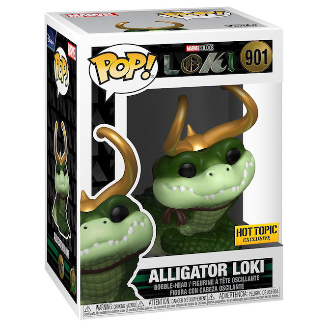

Eva 01 (Bloody/Metallic)
Neon Genesis Evangelion
When the original version of this POP! was released, I was already in love. When I eventually found out about this version, I ordered it the first chance I had. Metallic POP!s are usually pretty cool but the added blood on this made this an awesome representation of one of my favorite anime.
10" Zombie Black Panther
Marvel Zombies
Though a regular sized (3.5 inch) POP! was planned for release, they were cancelled shortly after the death of Chadwick Boseman. Thankfully the 10" was still released and is great. The black and gold outfit contrasts perfectly while the bones showing and slime are great details courtesy of the Marvel Zombies line.
Alligator Loki
Marvel's Loki

Being that there are far more two legged POP!s and not as many animals, Alligator Loki is one of the better ones in my opinion. While the POP! might seem cuter than his TV counterpart, both are great versions of one of the more unique Lokis.
Erik Killmonger as Glow Panther
Marvel's Black Panther
I tried to keep duplicates off of this list but technically, T'Challa (Black Panther) and Killmonger are two different people. Though there are many glow-in-the-dark POP!s, the particular glow and attention to detail on this one certainly make it stand out.
The Hunter
Bloodborne
Being that I love Bloodborne and the other Soulsborne games, naturally I am going to love the POP!. I love the attention to detail put into his outfit, as well as the weapons.
Tanjiro Kamado (Constant Flux)
Demon Slayer
When it was originally released, both fans and non-fans alike were clamoring over this POP!. The quality of them has certainly gone up over the years but the water swirling around Tanjiro, the dragon head, and glow combined make this one of the best yet.
10" Charizard
Pokémon
While I don't like the look of most of the Pokémon POP!s, the jumbo version of the Charizard POP! is one of my favorites. The size captures the scale of the menacing Charizard perfectly and the see-through flame on his tail is a nice touch as well.
Frog of Thunder
Marvel's Loki
Though being on this list for basically the same reason as Alligator Loki, "Throg" is a (slightly) cooler POP! in my opinion because of his container. The container has his variant number on it and is a nice little easter egg from the show.
Eren Yaeger (Hardened)
Attack On Titan
Similar to the Tanjiro POP!, this one quickly sold out as soon as it went live. It took a lot of refreshing and patience, but eventually I got one! While my dreams of owning all the titan form POP!s will probably never come true, having the Female Titan and this one are still awesome in my book.
Neon City Godzilla
Godzilla vs. Kong
While this POP! is currently still on my wishlist, I do have the 10 inch Godzilla in his normal coloration. As a longtime Godzilla fan, these POP!s from the most recent movies are a great representation of this kaiju and are certainly more affordable than other figures of this size.